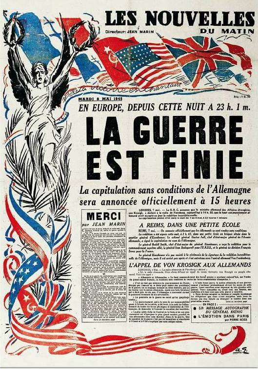

Le Carrefour du 8 Mai 1945
En 1964, le carrefour de la Porte-Blanche devient le carrefour du 8 Mai 1945. Cela fait bien évidemment référence à la date de la capitulation allemande à la fin de la Seconde Guerre mondiale.

En 1964, le carrefour de la Porte-Blanche devient le carrefour du 8 Mai 1945. Cela fait bien évidemment référence à la date de la capitulation allemande à la fin de la Seconde Guerre mondiale.